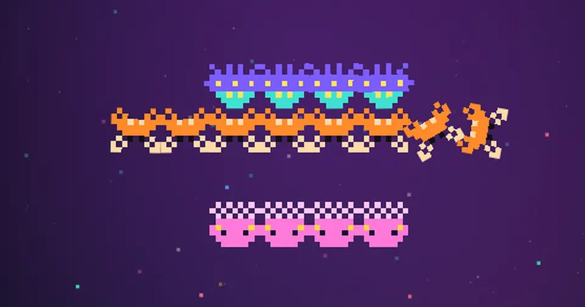

별빛 편대
Star Squadron
슈팅 · 고전무료설치 없음폰 · PC
▶ 지금 바로 하기로그인 없이 브라우저에서 바로 시작돼요
어떤 게임인가요?
성운 속 외계 편대를 쏘아 떨어뜨리는 우주 슈팅. 해파리 드론 · 게 로봇 · 원반 모선이 몰려오고, 모선이 자석 그물로 끌어간 전투기를 되찾으면 쌍발! 변신 외계인과 보너스 스테이지까지.
목표 · 외계 편대를 모두 격추하면 다음 스테이지. 최대한 높은 스테이지와 점수를 노리세요.
게임 방법
- 스테이지가 시작되면 외계인 40기(원반 모선 4 · 게 로봇 16 · 해파리 드론 20)가 무리 지어 날아와 편대를 짭니다. 날아오는 중에 맞히면 점수가 더 커요.
- 편대가 짜이면 하나씩, 모선은 게 로봇 호위와 함께 급강하하며 총을 쏩니다.
- 원반 모선은 두 번 맞혀야 떨어져요(보라 → 빨강). 모선이 멈춰 자석 그물을 내리면 피하세요. 걸리면 전투기를 빼앗겨요.
- 빼앗긴 전투기를 단 모선이 급강하할 때 맞히면 전투기를 되찾아 두 대가 나란히 쏘는 쌍발이 됩니다. 편대에 있을 때 맞히면 잃어요.
- 화면에 내 총알은 한 번에 2발(쌍발은 2쌍)까지만. 헛쏘면 다음 발이 늦어져요.
- 4 · 8 · 12… 스테이지는 보너스 스테이지: 적이 쏘지 않고 지나가기만 해요. 한 기당 120점, 40기 전멸이면 10,000점.
- 30,000점과 100,000점마다 전투기 +1.
- 5 · 10 · 15… 스테이지는 보스전: 거대한 외계 모선이 부채꼴 탄막을 뿌리고 작은 돌격병을 내보내요. 체력이 40% 아래로 떨어지면 더 거칠어져요.
- 스테이지를 깰 때마다 강화 카드 1장: 탄창 · 연사 · 관통 · 확산 포 · 유도 미사일 · 번개 레이저 · 호위 드론 · 전자기 파동 · 폭발탄 · 캡슐 자석 등 14가지. 모두 모으면 점수 보너스 카드가 나와요.
등장하는 것들
- 해파리 드론 · 편대 60 · 비행 중 100
- 게 로봇 · 편대 90 · 비행 중 180
- 원반 모선 (2번 맞혀야) · 편대 200 · 비행 중 500 · 호위 1기 1,000 · 2기 2,000
- 자석 그물 · 걸리면 전투기를 빼앗김
- 쌍발 · 빼앗긴 전투기를 구출하면 두 배 화력
- 변신 외계인 (4판부터) · 깜빡이던 드론이 셋으로 갈라짐 · 하나 200 · 셋 다 1,000 / 2,000 / 3,000
- 적이 된 전투기 · 모선을 편대에서 잡으면 빼앗긴 전투기가 덤벼요 · 1,000
- 보너스 스테이지 · 4판마다 · 적이 쏘지 않음 · 40기 전멸 +10,000
- 돌 딱정벌레 (6판부터) · 세 번 맞혀야 · 400
- 분열 해파리 (8판부터) · 잡으면 작은 돌격병 둘로 갈라짐 · 350
- 저격 외계인 (10판부터) · 편대에서 세 갈래 탄을 쏨 · 350
- 외계 모선 보스 (5판마다) · 체력 막대 · 격추하면 큰 보너스 + 캡슐 2개
공략 팁
- 급강하하는 적을 노리면 점수가 두 배 가까이 돼요.
- 자석 그물이 내려오면 옆으로 한 칸 이상 비키세요. 일부러 잡힌 뒤 구출하면 쌍발이 됩니다.
- 쌍발은 화력이 두 배지만 맞을 면적도 넓어요.
- 보너스 스테이지는 적이 들어오는 길을 외우면 퍼펙트가 가능해요. 길 모양은 세 가지가 번갈아 나와요.
- 드론이 깜빡이기 시작하면 변신 신호! 갈라진 셋을 모두 잡을 준비를 하세요.
- 적이 몇 기 안 남으면 쉬지 않고 급강하해요. 끝까지 방심 금지.
- 보스전엔 번개 레이저 · 유도 미사일이 특히 강해요. 부채꼴 탄막은 탄 사이 빈틈으로 빠져나가세요.
 오목
오목 왕머리 축구
왕머리 축구 탑 쌓기
탑 쌓기 스도쿠
스도쿠 틀린 그림 찾기
틀린 그림 찾기 딱지치기
딱지치기